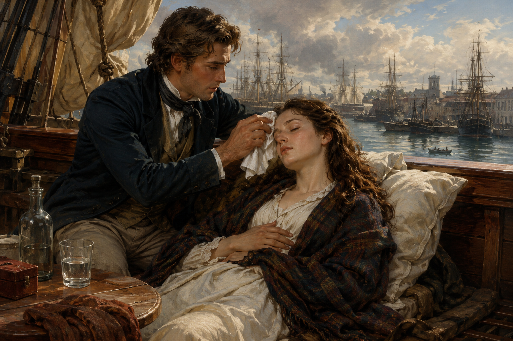

"Theo bạn, khi đi đến một xứ sở khác, tiếp xúc với một nền văn hoá khác, người ta thường có những phản ứng hay cảm xúc như thế nào trước những gì được gặp, được thấy? Bạn đã biết câu chuyện thú vị nào về cuộc tiếp xúc văn hoá giữa những người đến từ hai thế giới: phương Đông và phương Tây? Hãy chia sẻ câu chuyện đó."
Tiểu sử và cuộc đời: Cao Bá Quát (1808–1855) quê ở huyện Gia Lâm, nay thuộc thành phố Hà Nội. Ông nổi tiếng học rộng, tài cao, đỗ cử nhân sớm (1831) nhưng lận đận trên con đường làm quan.
Sự nghiệp sáng tác: Cao Bá Quát sáng tác bằng cả chữ Hán và chữ Nôm. Thơ văn ông mang đến cái nhìn nhân văn, tinh thần dân chủ của một nghệ sĩ có tâm hồn rộng mở, phóng khoáng, sẵn sàng đón nhận và trân trọng những nét đẹp mới mẻ, xa lạ với truyền thống.
Hoàn cảnh sáng tác: Bài thơ được Cao Bá Quát sáng tác trong chuyến xuất dương hiệu lực năm 1844 (đi phục dịch để lấy công chuộc tội sau vụ án trường thi Thừa Thiên).
Thể loại: Thơ cổ phong (thể hành), một thể thơ tự do, không hạn định độ dài, chú trọng nhịp điệu và cảm xúc.
Hình ảnh thiếu phụ Tây phương hiện lên qua các chi tiết miêu tả ngoại hình và hành động: áo trắng như tuyết, tựa vai chồng dưới bóng trăng, hững hờ cốc sữa trên tay, uốn éo đòi chồng nâng đỡ dậy. Đó là hiện thân của một nền văn hóa phương Tây phóng khoáng, mới lạ và đầy quyến rũ.

Hình 1: Minh họa khung cảnh trong Dương phụ hành (src="h1.png")
Tác giả đứng trên điểm nhìn của một nhà Nho phương Đông nhưng sở hữu tâm hồn rộng mở, nhạy cảm. Từ đó, tác giả quan sát, ngạc nhiên, thấu hiểu và bộc lộ sự đồng cảm sâu sắc với cảnh ngộ biệt li, trắc trở của con người.
Câu 1: So sánh và chỉ ra những chỗ khác biệt giữa bản dịch thơ với nguyên tác trong bài thơ Dương phụ hành.
Lời giải chi tiết: Bản dịch thơ bám sát ý nghĩa của nguyên tác chữ Hán, tuy nhiên có sự uyển chuyển về nhịp điệu thơ thất ngôn bát cú để phù hợp với cảm thụ của người đọc Việt Nam. Cần lưu ý các từ ngữ miêu tả sinh động hành động "uốn éo", "hững hờ" được chuyển tải tinh tế từ bản phiên âm chữ Hán.
Câu 2: Phân tích tâm trạng nhân vật trữ tình trong câu thơ kết và những ý tứ được mở ra từ câu thơ này.
Lời giải chi tiết: Câu thơ kết "Biết đâu nổi khách biệt li này" thể hiện sự đồng cảm sâu sắc của nhà thơ. Từ cảnh ngộ sum vầy của người phương Tây, nhà thơ liên tưởng đến nỗi đau chia lìa, tình cảnh lận đận của chính mình và con người trong thời đại nhiều biến động.
❓ Câu hỏi thảo luận: Đọc bài thơ, bạn cảm nhận được những gì về tư tưởng, tâm hồn tác giả Cao Bá Quát?
Hướng dẫn giải quyết: Tác giả là một nghệ sĩ có cái nhìn nhân văn sâu sắc, tinh thần dân chủ, cởi mở trước những nền văn hóa mới lạ, vượt qua định kiến phong kiến thông thường để trân trọng vẻ đẹp con người.
Thể hành là một thể thơ cổ phong có nguồn gốc từ Trung Quốc, thường có nhịp điệu linh hoạt, phóng khoáng, rất thích hợp để kể chuyện kết hợp bộc lộ cảm xúc mãnh liệt.
Vận dụng kỹ năng phân tích yếu tố tự sự trong thơ trữ tình để cảm nhận sâu sắc hơn các tác phẩm thơ ca trung đại và hiện đại khác.
Bài tập 1: Viết đoạn văn (khoảng 150 chữ) trình bày điều bạn thấy tâm đắc nhất ở bài thơ "Dương phụ hành".
Gợi ý đáp án chi tiết:
Điều tâm đắc nhất ở bài thơ "Dương phụ hành" chính là cái nhìn cởi mở, nhân văn và đầy tinh tế của Cao Bá Quát trước một nền văn hóa hoàn toàn xa lạ. Thay vì mang định kiến khắt khe của một nhà Nho truyền thống, ông đã quan sát hình ảnh người thiếu phụ phương Tây với tất cả sự trân trọng, ngạc nhiên thú vị và sự đồng cảm sâu sắc. Qua bức tranh sinh động về đời sống nơi xứ người, nhà thơ khéo léo bộc lộ nỗi niềm hoài niệm, trăn trở về thân phận con người và những mối biệt li trong cuộc đời. Bài thơ cho thấy một tâm hồn nghệ sĩ phóng khoáng, nhạy cảm, luôn rộng mở đón nhận những nét đẹp mới mẻ của thế giới.
Bài tập 2: Phân tích sự kết hợp hài hòa giữa yếu tố tự sự và trữ tình trong văn bản truyện thơ dân gian (hoặc đoạn trích thơ trữ tình giàu yếu tố tự sự).
Gợi ý đáp án chi tiết:
Yếu tố tự sự và trữ tình trong thơ/truyện thơ có mối quan hệ gắn kết mật thiết, tương hỗ lẫn nhau. Yếu tố tự sự cung cấp cốt truyện, nhân vật, không gian, thời gian và sự kiện (ví dụ cảnh tiễn đưa, cảnh sinh hoạt, hành động của nhân vật). Trong khi đó, yếu tố trữ tình thổi hồn vào các sự kiện ấy, giúp bộc lộ trực tiếp cảm xúc, tâm trạng, tiếng lòng sâu kín của chủ thể. Nhờ sự kết hợp này, câu chuyện không trở nên khô khan, cứng nhắc mà mang âm hưởng dạt dào cảm xúc, chạm đến chiều sâu tâm hồn người đọc.
Bài tập 3: Phân tích ý nghĩa của hình tượng người thiếu phụ Tây phương trong việc thể hiện chủ đề tác phẩm.
Gợi ý đáp án chi tiết:
Hình tượng người thiếu phụ Tây phương không chỉ là bức tranh ký họa sinh động về con người và văn hóa phương Tây qua góc nhìn của một nhà thơ Việt Nam thế kỷ XIX, mà còn mang ý nghĩa biểu tượng sâu sắc. Hình ảnh ấy đại diện cho luồng gió mới của thời đại, sự giao thoa văn hóa Đông - Tây. Đồng thời, qua cảnh tượng sinh hoạt và câu chuyện của nàng, tác giả dẫn dắt người đọc đến những chiêm nghiệm triết lý về tình yêu, sự gắn bó đôi lứa và nỗi đau biệt li mang tính nhân loại.